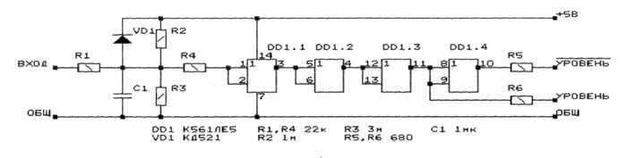
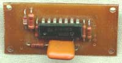

Контактный датчик уровня жидкости
При разработке системы перекачки воды с помощью электромагнитного насоса возникла проблема включения или отключения насоса при достижении уровнем жидкости заданного значения. Для ее решения был разработан простой контактный датчик уровня, схема которого представлена на рис. 1.

Рис. 1. Схема электрическая принципиальная контактного датчика уровня жидкости.
Ко входу датчика (ВХОД-ОБЩ) подключается группа контактов (два открытых контакта), смонтированная в резервуаре, уровень жидкости в котором необходимо контролировать. Жидкость должна обладать электропроводящими свойствами (сопротивление между контактами, погруженными в жидкость, не должно превышать 500 кОм), как, например, водопроводная вода. Цепочка R1C1 является фильтром нижних частот первого порядка и служит для повышения помехозащищенности датчика. Усилительная часть смонтирована на микросхеме DD1 (К561ЛЕ5), входной порог (логическая единица) установлен цепочкой R2R3. При разомкнутых входных контактах значение сигнала УРОВЕНЬ равно логическому нулю, а сигнала -УРОВЕНЬ - логической единице, при замкнутых - наоборот: УРОВЕНЬ = 1, -УРОВЕНЬ = 0. Эти сигналы могут использоваться для системы управления насоса, который либо накачивает жидкость в резервуар при понижении ее уровня ниже уровня контактов, либо откачивает жидкость из резервуара при повышении ее уровня выше уровня контактов. Гистерезис включения-выключения обеспечивается за счет поверхностного натяжения. Напряжение питания схемы может находиться в пределах +5 ... +15 В в зависимости от характеристик устройств, с которыми она работает совместно.
Внешний вид печатной платы контактного датчика уровня жидкости показан на рис. 2. Плата может встраиваться в систему управления жидкостного насоса или использоваться для целей индикации и сигнализации.

Рис. 2. Печатная плата контактного датчика уровня жидкости (размеры 25 х 50 мм2).
Нежелательно использовать датчик для контроля уровня легковоспламеняемых жидкостей.
Состояние разработки:
Контактный датчик уровня жидкости опробован в действующей установке циркуляции воды с двумя насосами (подающим и откачивающим) и показал хорошие эксплуатационные характеристики.
26.02.2004
31.01.2006
16.06.2010
Альтернативные источники
энергии
Компьютеры и
Интернет
Магнитные поля
Механотронные системы
Перспективные
разработки
Электроника и
технология